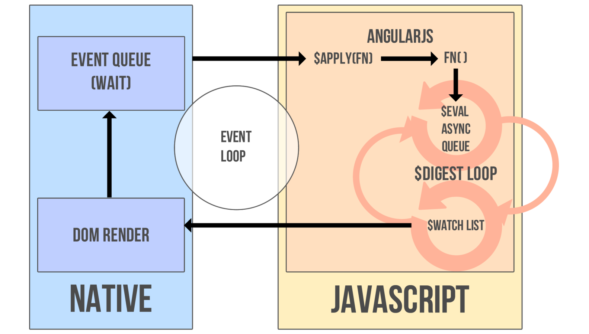

Cet exercice à pour but de démystifier le schéma suivant :
... en créant tout simplement notre propre AngularJS
Vous partirez de cette page vierge de tout javascript pour construire petit à petit un mini framework qui à pour specs le schéma ci-dessus